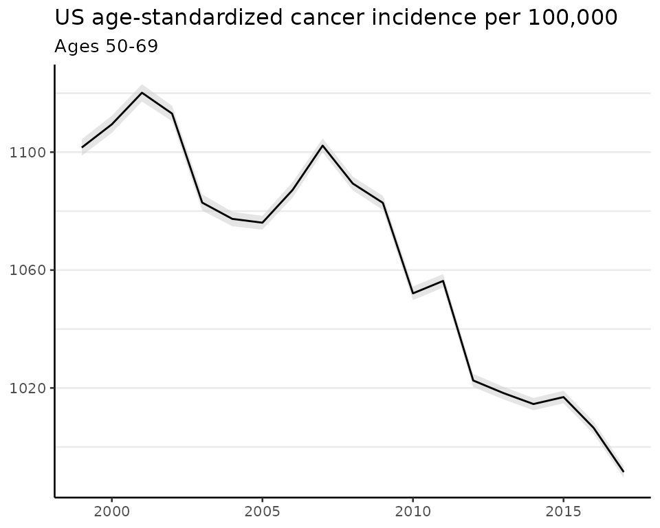
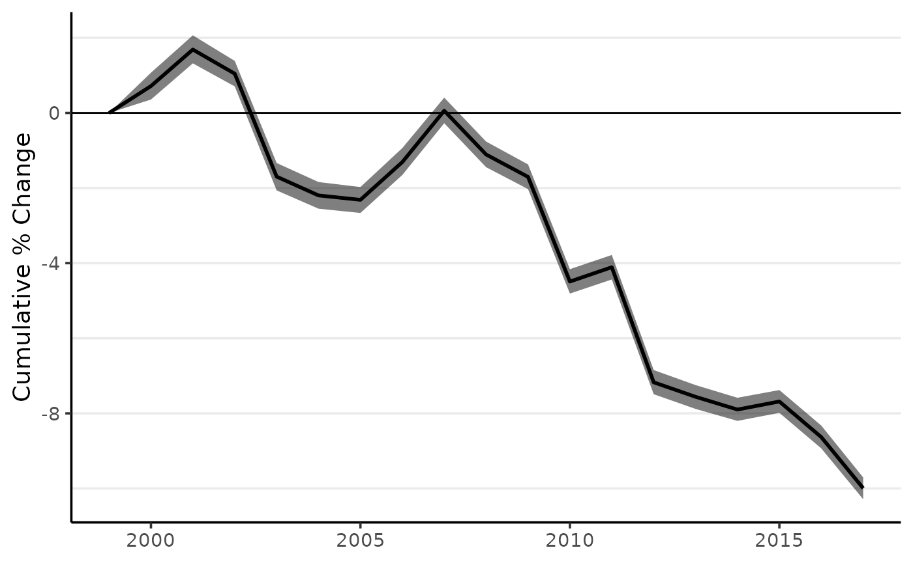

This vignette describes the method of direct age-standardization (Broemeling 2020) and then demonstrates implementation with surveil.
Data
The demonstration will use age-specific cancer incidence for the entire population of the United States of America, 1999-2017.
library(surveil)
data(cancer)
head(cancer)
#> Year Age Count Population
#> 1 1999 <1 866 3708753
#> 2 1999 1-4 2959 14991152
#> 3 1999 5-9 2226 20146188
#> 4 1999 10-14 2447 19742631
#> 5 1999 15-19 3875 19585857
#> 6 1999 20-24 5969 18148795We will also use the age distribution of the United States in the year 2000 (2000 U.S. standard million population, see ?standard):
data(standard)
print(standard)
#> age.id age standard_pop
#> 1 1 <1 13818
#> 2 2 1-4 55317
#> 3 3 5-9 72533
#> 4 4 10-14 73032
#> 5 5 15-19 72169
#> 6 6 20-24 66478
#> 7 7 25-29 64529
#> 8 8 30-34 71044
#> 9 9 35-39 80762
#> 10 10 40-44 81851
#> 11 11 45-49 72118
#> 12 12 50-54 62716
#> 13 13 55-59 48454
#> 14 14 60-64 38793
#> 15 15 65-69 34264
#> 16 16 70-74 31773
#> 17 17 75-79 26999
#> 18 18 80-84 17842
#> 19 19 85+ 15508Notice that the five-year age groups in the cancer data match the age groups provided by standard.
In some cases, one is only interested in a subset of age groups. For the following examples, we will limit the analysis to persons 50-69 years old:
cancer2 <- subset(cancer, grepl("50-54|55-59|60-64|65-69", Age))
head(cancer2)
#> Year Age Count Population
#> 12 1999 50-54 99571 16557188
#> 13 1999 55-59 121501 12787366
#> 14 1999 60-64 143968 10435791
#> 15 1999 65-69 178278 9311622
#> 31 2000 50-54 106458 17394053
#> 32 2000 55-59 127276 13258779Subsetting the data allows for faster results. If instead of making this selection we were to use the entire age distribution in our analysis, all of the following discussion and code could still proceed unchanged.
Direct age-standardization
Let \(\theta_i\) be the disease risk in the \(i^{th}\) age group, and let \(\omega_i\) be the standard population count for that age group. Then the age-standardized risk is: \[SR = \frac{\sum_i \theta_i \omega_i}{\sum_i \omega_i}\] That is, age-standardization consists of multiplying actual age-specific rates by false, but fixed, population sizes. This enables comparisons to be made across populations that have different age structures.
There are two steps to producing age-standardized rates using surveil:
- Model time trends for each age group using
stan_rw. - Convert the age-specific model results into age-standardized rates using the
standardizefunction.
Modeling age-specific risk
To model age-specific rates, provide the stan_rw function with the cancer data and tell it which column contains the time period indicator (Year) and which column contains the grouping variable (Age):
fit <- stan_rw(cancer2, time = Year, group = Age,
refresh = 0,# silences some printing
iter = 2e3,
chains = 2) # for demo speed only. Use the default chains = 4
#> Distribution: normal
#> Distribution: normal
#> Warning: The largest R-hat is 1.06, indicating chains have not mixed.
#> Running the chains for more iterations may help. See
#> https://mc-stan.org/misc/warnings.html#r-hat
#> Warning: Bulk Effective Samples Size (ESS) is too low, indicating posterior means and medians may be unreliable.
#> Running the chains for more iterations may help. See
#> https://mc-stan.org/misc/warnings.html#bulk-ess
#> [1] "Setting normal prior(s) for eta_1: "
#> location scale
#> -6 5
#> [1] "\nSetting half-normal prior for sigma: "
#> location scale
#> 0 1The default plot method will return all of the age-specific time trends on the same plot. It is sometimes easier to understand the results using a grid of multiple small plots (facet = TRUE). There is also an option to allow the scale of the y-axes to adjust for each age group (facet_scales = "free"):
plot(fit,
facet = TRUE, # plot small multiples
facet_scales = "free", # y-axes vary across plots
base_size = 10, # control text size
size = 0, # removes crude rates from the plots
scale = 100e3 # plot rates per 100,000
)
#> Plotted rates are per 100,000The figures contain estimates with shaded 95% credible intervals.
In addition to examining trends in age-specific rates (as above), we can also convert each age-specific trend to its annual percent change or cumulative percent change.

Age-standardizing model results
The standardize function takes a fitted model, plus the standard population, and returns standardized rates (SRs):
fit_sr <- standardize(fit,
label = standard$age,
standard_pop = standard$standard_pop)As usual, surveil provides a plotting method for the fit_sr object:
# load ggplot2 to enable additional plot customization
library(ggplot2)
plot(fit_sr, scale = 100e3, base_size = 10) +
labs(title = "US age-standardized cancer incidence per 100,000",
subtitle = "Ages 50-69")
#> Plotted rates are per 100,000
as well as a printing method:
print(fit_sr, scale = 100e3)
#> Summary of age-standardized surveil model results
#> As rate per 100,000 at risk
#> Time periods: 19
#> time_label stand_rate .lower .upper
#> 1999 1102 1099 1104
#> 2000 1109 1107 1112
#> 2001 1120 1117 1123
#> 2002 1113 1110 1116
#> 2003 1083 1080 1086
#> 2004 1077 1075 1080
#> 2005 1076 1074 1078
#> 2006 1087 1085 1090
#> 2007 1102 1100 1105
#> 2008 1089 1087 1092
#> 2009 1083 1080 1085
#> 2010 1052 1050 1054
#> 2011 1056 1054 1059
#> 2012 1023 1020 1025
#> 2013 1018 1016 1020
#> 2014 1015 1012 1017
#> 2015 1017 1015 1019
#> 2016 1006 1004 1009
#> 2017 991 990 993To learn about the contents of fit_sr, see ?standardize or explores its contents as you would a list using names(fit_sr), fit_sr$standard_summary, head(fit_sr$standard_samples), etc.
The apc function and its methods for printing and plotting can be applied to the age-standardized results:
fit_sr_pc <- apc(fit_sr)
plot(fit_sr_pc, cum = TRUE)
References
Broemeling, Lyle D. 2020. Bayesian Methods in Epidemiolgy. CRC Press.
Donegan, Connor, Amy E. Hughes, and Simon J. Craddock Lee. 2022. “Colorectal Cancer Incidence, Inequality, and Prevention Priorities in Urban Texas: Surveillance Study with the ‘Surveil’ Software Pakcage.” JMIR Public Health & Surveillance 8 (8): e34589. https://doi.org/10.2196/34589.